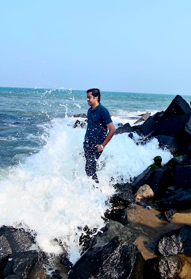

Director, BaSig Wireless Laboratories India Pvt. Ltd., Mayiladuthurai, Tamil Nadu
An end-to-end 4G/5G cellular testbed for research, teaching and live demonstrations.
Visit site →Hands-on platform for applying deep learning to RF signals, waveforms and channel coding.
Visit site →Your Extensible Software Defined Radio — an open, AI-driven private cellular standard.
Visit site →WIreless GUide for You — an SDR-based kit for learning wireless communication principles.
Visit site →A drone platform with 5G connectivity for UAV communication research and use cases.
Visit site →Full list on Google Scholar